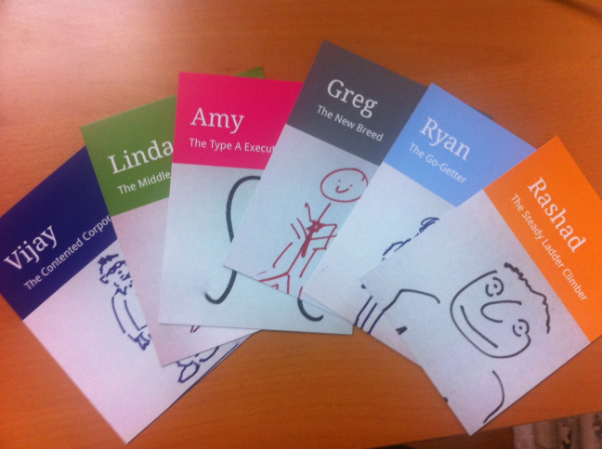

Your browser doesn't support the features required by impress.js, so you are presented with a simplified version of this presentation.
For the best experience please use the latest Chrome, Safari or Firefox browser.
ERGONOMIE WEB
Web ergonomy
L'ergonomie, c'est l'étude des relations entre l'homme et la machine.
Un site web ergonomique est un site utile, facilement utilisable et qui donne satisfaction à l'utilisateur.
I.
Les contraintes spécifiques
au web
Le matériel
Les navigateurs

Les utilisateurs

II.
Architecture d'un site web
Structure de l'information
Organisation visuelle
Cas particuler : la page d'accueil
III.
Le contenu
La navigation
Rédaction et mise en page
Les formulaires
IV.
Le design web
Les couleurs
Les images
L'accessibilité
Conclusion
A quoi ça sert ?